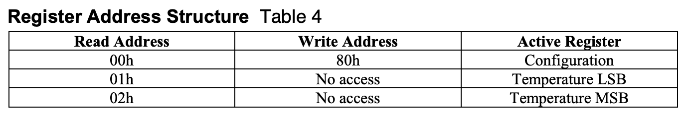
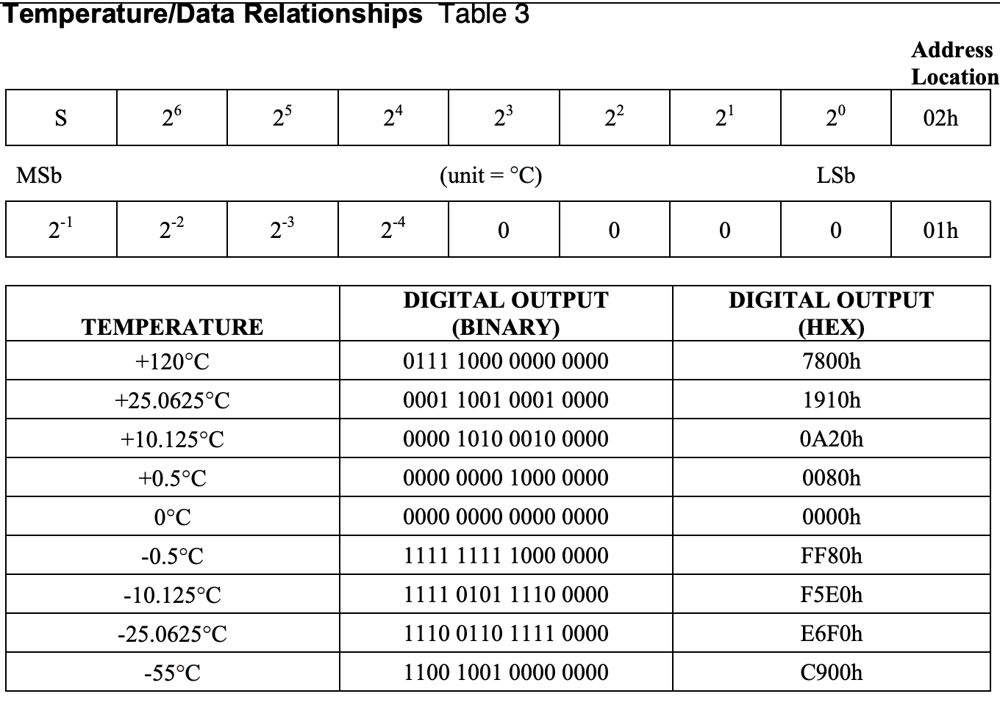
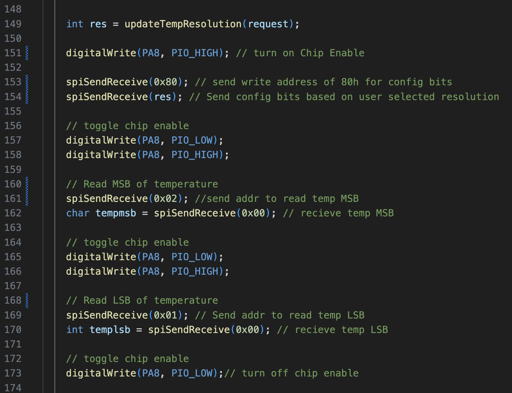
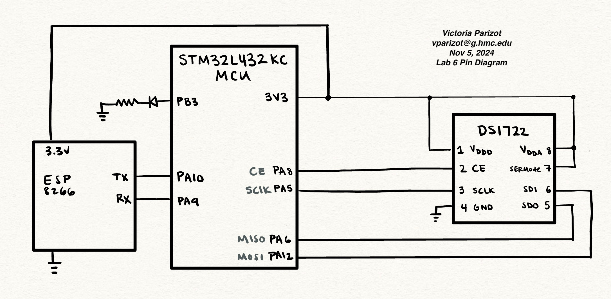
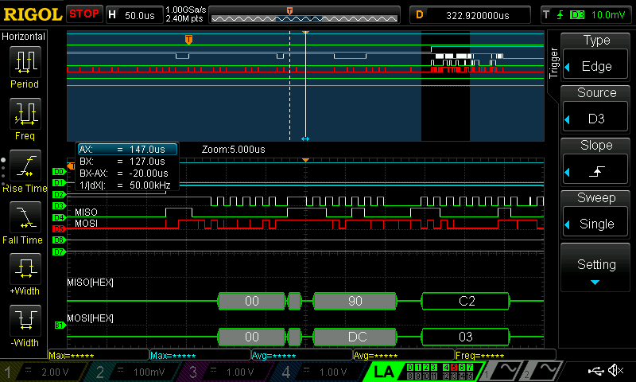

Lab 6: The Internet of Things and Serial Peripheral Interface
Introduction & Learning Objectives
In Lab 6, I built an internet-accessible device to control an onboard LED and measure ambient temperature. I used an ESP8255, the MCU GPIO, a DS1722 temperature sensor, and SPI peripherals to view current temperature on a webserver and allow the user to control temperature resolution and an onboard LED.
This lab had the following learning objectives:- Designed and built a simple IoT device
- Written C libraries using the CMSIS device templates to implement the SPI functionality of the MCU
- Interfaced with a temperature sensor module over an SPI link
- Interfaced the MCU with an ESP8266 module over a UART link
- Use the logic analyze functionality of the scope in the Digital Lab to debug serial communication protocols and export captured signal data.
- Written a simple HTML page to control and display data from the peripherals connected to your MCU.
The datasheet for the DS1722 temperature sensor can be found here.
The source code for the project can be found in the associated Github repository.
Design
MCU SPI Configuration
To implement SPI on the MCU, I implemented initSPI, a function to initialize SPI communication using a choosen baud rate, clock phase, and clock polarity,
Recall that the SPI clk will be equal to \(\frac{master clock}{2^{BR+1}}\). I set the baud rate to be 6 so that the SPI clock would run slower than the clock for the temperature sensor. I also set the packet size to 8 bits to align with what the temperature sensor will output.
I opted to control my own chip enable, PA8, which I would manually toggle for each read and write operation. For my other SPI ports, I consulted the data sheet to see which pins were compatible with SPI1. Thus, I opted to set PA6 as the MISO line, PA12 as the MOSI line, and PA5 and the SCLK.
My design uses the CMSIS library device templates, making it easier to decipher how bits are being set.
Interfacing with the Temperature Sensor
To communicate with the temperature sensor, I had to send the write address, 0x80, for the configuration bits followed by the configuration bits. These configuration bits were set depending on the wanted temperature resolution. Then I would read the LSB and MSB of the temperature bits by calling read address 0x01 or 0x02, respectfully. The Register Address structure and the bit structure of the temperature output is below.


The screenshot of the code for my SPI interaction is below to showcase the send/recieve format and how I toggle the Chip Enable.

To be able to print the temperature, I used a bit map to isolate the sign bit in the MSB. I then used the other values of the MSB to determine the integer value of the temperature. Then, depending on if the temperature was positive or negative, I would add or subtract corresponding resolution bits.
Website Design
My website also allowed for a user to select the resolution of the temperature sensor. To implement this, I incorporated a form with a button for each resolution option. Depending on which button was selected, I would set the temperature configuration bits to reflect this. This HTML was sent via the ESP8266 with UART.
Everytime the website would refresh, the DS1722 would read and print the updated temperature.
Hardware Design
To implement in hardware, I attatched the corresponding pins of the DS1722 and ESP8266 to the MCU, based on the pin diagram below.

Testing & Debugging
I tested using the debugger in Segger and the logic analyzer.
The printf() function was used to reveal intermediate values of my temperature data, allowing me to see when the temperature data was not as expected. This technique was useful in confirming that my temperature conversions were as desired.
The logic analyzer allowed me to look at the SPI communications. I could also convert the MISO and MOSI lines to the actual values being sent, which made deciphering the communication much easier. By using the logic analyzer I was able to find a bug: only my 0x80 send request was being sent and the rest of the communication was all zero. This led me to look at my wiring. Ultimately, I had forgotten to remove a jumper between the pin for my MISO line and GND.
A sample SPI transaction from logic analyzer can be seen below.

Conclusion
Lab 6 provided an introduction into SPI and UART. Moreover, I grew more comfortable with additional debugging tools, such as using the debug mode and the logic analyzer to decipher SPI communication.
Lab 6 meets all the requirements for excellence, and took me approximately 25 hours to complete.